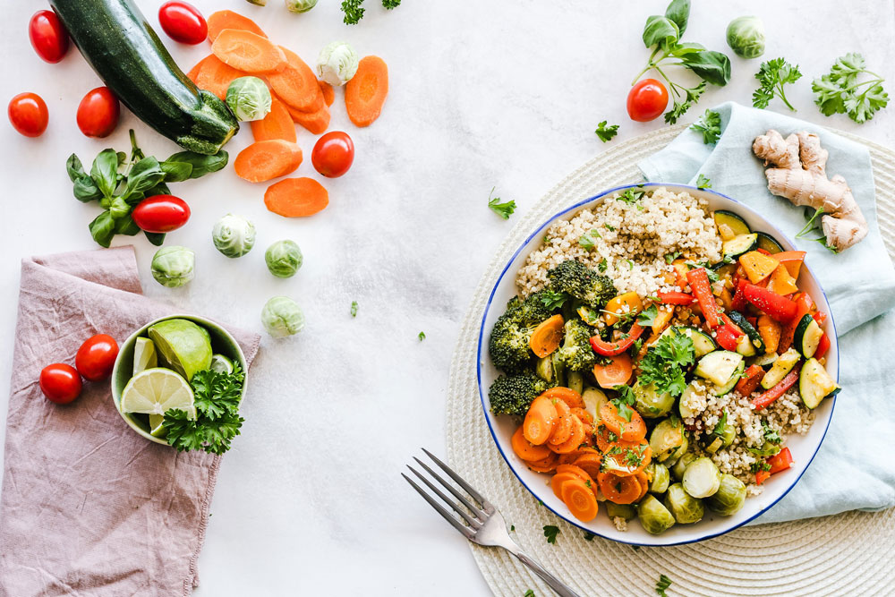
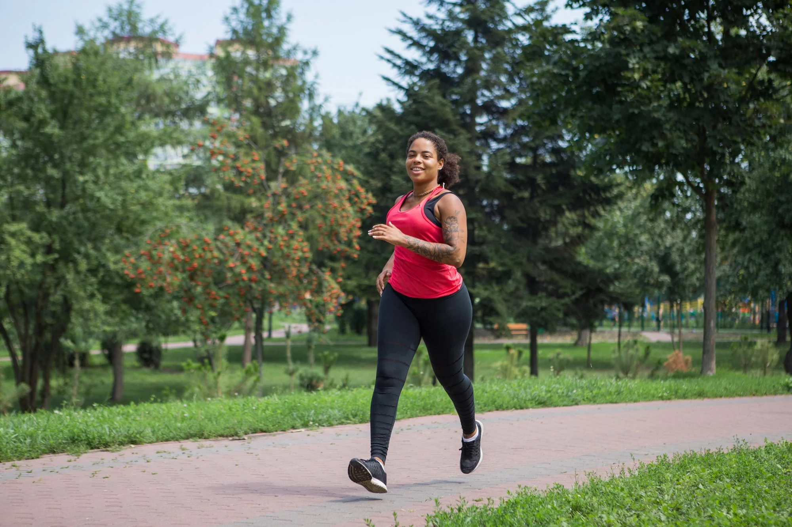
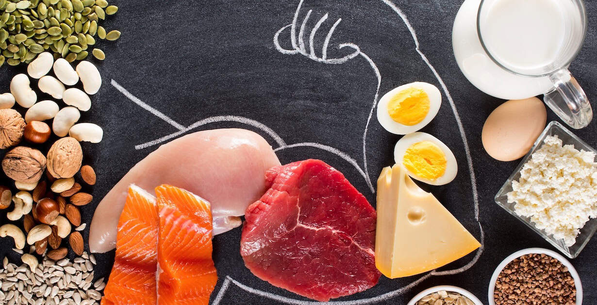
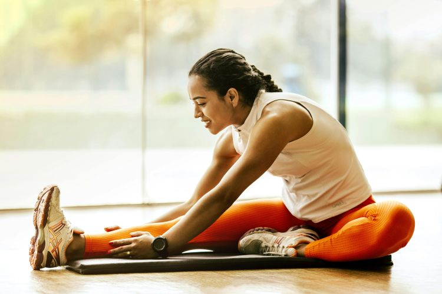
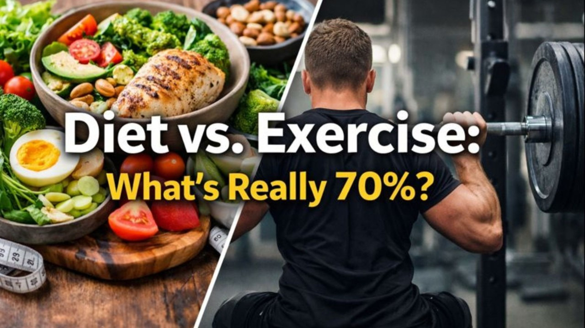

8 tips for healthy eating
The key to a healthy diet is to eat the right amount of calories for how active you are so you balance the energy you consume with the energy you use.
Read MoreEvidence‑based nutrition and exercise guidance

The key to a healthy diet is to eat the right amount of calories for how active you are so you balance the energy you consume with the energy you use.
Read More
Explore the physical, mental, and lifestyle benefits of running and see how consistent movement can change your life and support young athletes.
Read MoreProper nutrition and hydration are essential for runners, impacting everything from energy levels to recovery. Understanding and implementing a balanced nutritional strategy can significantly enhance your running performance and overall health.
Read More
Being physically active is a major step toward good heart health. It’s one of your most effective tools for strengthening the heart muscle, keeping your weight under control and warding off the artery damage from high cholesterol, high blood sugar and high blood pressure that can lead to heart attack or stroke.
Read More
Your diet supplies nutrients that support muscle growth and recovery after exercise. High-protein foods –– such as chicken, fish, and tofu –– provide amino acids that help your body repair muscle damage and build muscle.
Read More
You know exercise is important, but what about stretching? Does stretching take a back seat to your exercise routine? Not so fast. Stretching may help you improve your range of motion and decrease your risk of injury, among other benefits.
Read More
With endless health interventions out there, such as the 80/20 rule and exercise-free diets, it can be hard to gauge whether you should prioritize diet or exercise — or if the answer lies somewhere in between.
Read More